unsupervised
Pas de variable dépendante, découverte des données
Principal component analysis
L’objectif est de réduire dimension des données pour obtenir une meilleur visualisation. transforme les données mais n’ajoute pas d’information supplémentaire. PCA : transformation linéaire des data d’une dimension à une autre qui conserve un maximum d’information
data : Vecteurs numériques. Si facteurs, transforme en vecteur numérique sinon use FDA
With a fixed number of training samples, the predictive power reduces as the dimensionality increases, and this is known as the Hughes phenomenon
But réduire la variabilité d’un dataset. On crée de nouvelles variables orthogonales qui explique le plus possible de variances des variables.
basé sur la matrice des covariances
pca <- prcomp(subset(iris, select = -Species))
pca## Standard deviations:
## [1] 2.0562689 0.4926162 0.2796596 0.1543862
##
## Rotation:
## PC1 PC2 PC3 PC4
## Sepal.Length 0.36138659 -0.65658877 0.58202985 0.3154872
## Sepal.Width -0.08452251 -0.73016143 -0.59791083 -0.3197231
## Petal.Length 0.85667061 0.17337266 -0.07623608 -0.4798390
## Petal.Width 0.35828920 0.07548102 -0.54583143 0.7536574plot(pca)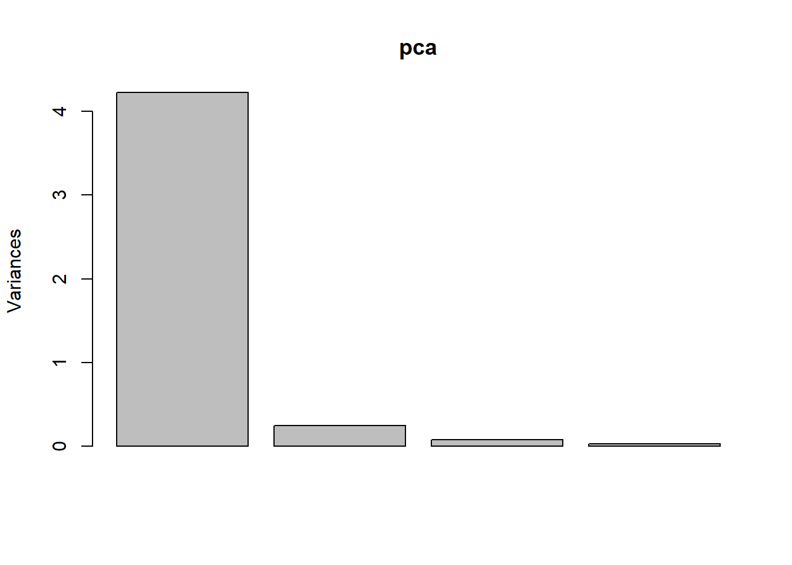
mapped_iris <- as.data.frame(predict(pca, iris))
mapped_iris <-cbind(mapped_iris, Species = iris$Species)
ggplot() +
geom_point(data=mapped_iris,aes(x = PC1, y = PC2, colour = Species))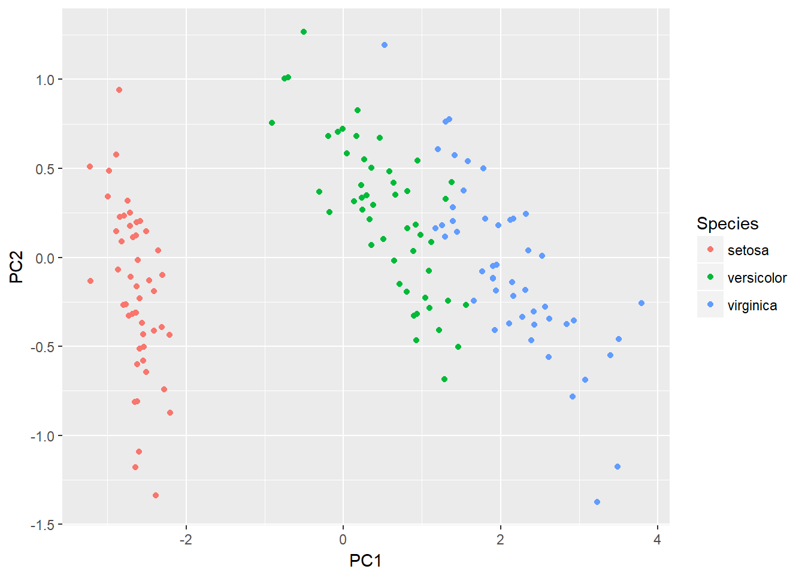
pca_data <-data[,c("f381","f408","f495","f529","f549","f539","f579","f634","f706","f743")]
pca_data <-na.omit(pca_data)
#Normalise the data before applying PCA analysis mean=0, and sd=1
scaled_pca_data <-scale(pca_data)
pca_results <-prcomp(scaled_pca_data)
summary(pca_results)## Importance of components:
## PC1 PC2 PC3 PC4 PC5 PC6
## Standard deviation 1.9931 1.6839 0.97682 0.94634 0.82350 0.58675
## Proportion of Variance 0.3972 0.2836 0.09542 0.08956 0.06781 0.03443
## Cumulative Proportion 0.3972 0.6808 0.77620 0.86576 0.93357 0.96800
## PC7 PC8 PC9 PC10
## Standard deviation 0.53722 0.12881 0.11686 0.03351
## Proportion of Variance 0.02886 0.00166 0.00137 0.00011
## Cumulative Proportion 0.99686 0.99852 0.99989 1.00000plot(pca_results)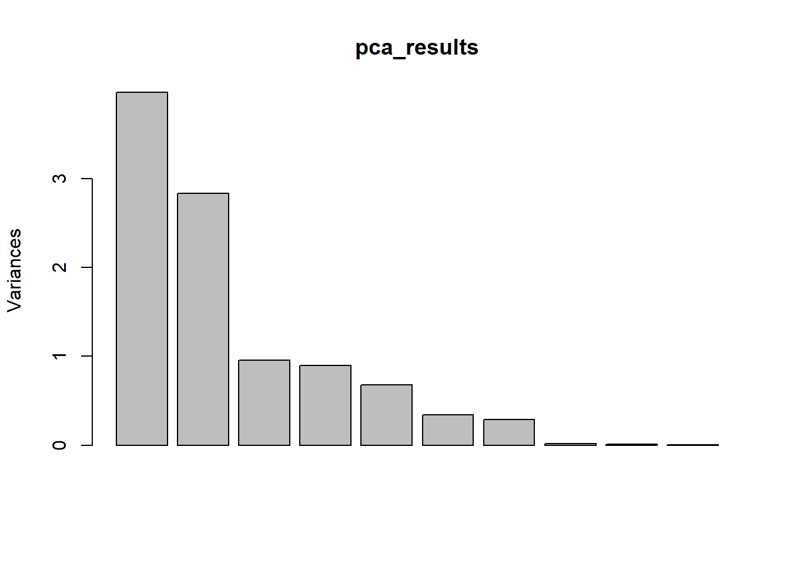
Cluster analysis
grouper en groupe homogène.Clustering toujours la même chose, le truc qui change est la metrique
Différent type de clustering : - Connectivity models : Distance connectivity between observations is the measure, e.g., hierarchical clustering. - Centroid models : Distance from mean value of each observation/cluster is the measure, e.g., k-means. - Distribution models : Significance of statistical distribution of variables in the dataset is the measure, e.g., expectation maximization algorithms. - Density models: Density in data space is the measure, e.g., DBSCAN models. - Hard Clustering: Each object belongs to exactly one cluster - Soft Clustering : Each object has some likelihood of belonging to a different cluster
Remarque : pas de selection de variables dans le clustering, il faut porter de l’attention sur le dataset et les variables utilisées.
A good clustering algorithm can be evaluated based on two primary objectives: - High intra-class similarity - Low inter-class similarity
Choix de la mesure de similarité important
# introduction to dataset
Data_House_Worth <-read.csv("C:/Users/007/Desktop/Data science with R/R/Dataset/Chapter 6/House Worth Data.csv",header=TRUE);
str(Data_House_Worth)## 'data.frame': 316 obs. of 5 variables:
## $ HousePrice : int 138800 155000 152000 160000 226000 275000 215000 392000 325000 151000 ...
## $ StoreArea : num 29.9 44 46.2 46.2 48.7 56.4 47.1 56.7 84 49.2 ...
## $ BasementArea : int 75 504 493 510 445 1148 380 945 1572 506 ...
## $ LawnArea : num 11.22 9.69 10.19 6.82 10.92 ...
## $ HouseNetWorth: Factor w/ 3 levels "High","Low","Medium": 2 3 3 3 3 1 3 1 1 3 ...Data_House_Worth$BasementArea <-NULL
ggplot(Data_House_Worth, aes(StoreArea, LawnArea, color = HouseNetWorth))+geom_point()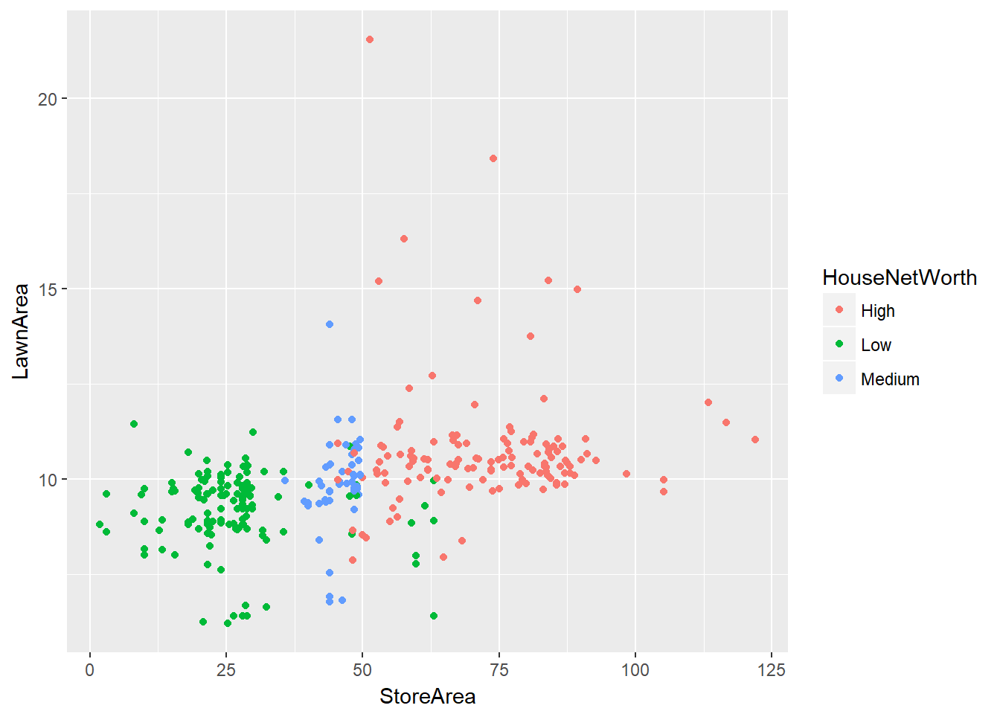
Hierarchical Clustering
Chaque data sont dans un cluster. Les clusters sont aggrégé hiérachiquement en fonction d’une distance la plus faible jusqu’au moment ou il ne reste qu’un cluster
Hierarchical clustering is based on the connectivity model of clusters. The steps involved in the clustering process are: - Start with N clusters,(i.e., assign each element to its own cluster). - Now merge pairs of clusters with the closest to other - Again compute the distance (similarities) and merge with closest one. - Repeat Steps 2 and 3 to exhaust the items until you get all data points in one cluster. - Chose cutoff at how many clusters you want to have.
library(ggplot2)
library(ggdendro)## Warning: package 'ggdendro' was built under R version 3.3.3##
## Attaching package: 'ggdendro'## The following object is masked from 'package:imager':
##
## label# Hierachical clustering
clusters <-hclust(dist(Data_House_Worth[,2:3]))
#Plot the dendogram
plot(clusters)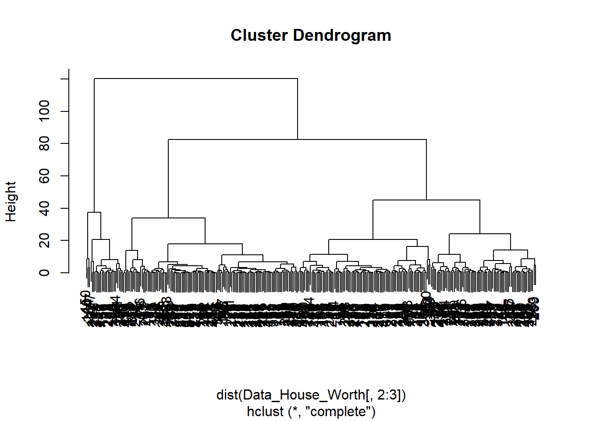
#create different number of cluster
clusterCut_2 <-cutree(clusters, 2)
#table the clustering distribution with actual networth
table(clusterCut_2,Data_House_Worth$HouseNetWorth)##
## clusterCut_2 High Low Medium
## 1 104 135 51
## 2 26 0 0clusterCut_3 <-cutree(clusters, 3)
table(clusterCut_3,Data_House_Worth$HouseNetWorth)##
## clusterCut_3 High Low Medium
## 1 0 122 1
## 2 104 13 50
## 3 26 0 0# ici choix du nombre cluster = 3 par hypothèse sur le business
ggplot(Data_House_Worth, aes(StoreArea, LawnArea, color = HouseNetWorth)) +
geom_point(alpha =0.4, size =3.5) +geom_point(col = clusterCut_3) +
scale_color_manual(values =c('black', 'red', 'green'))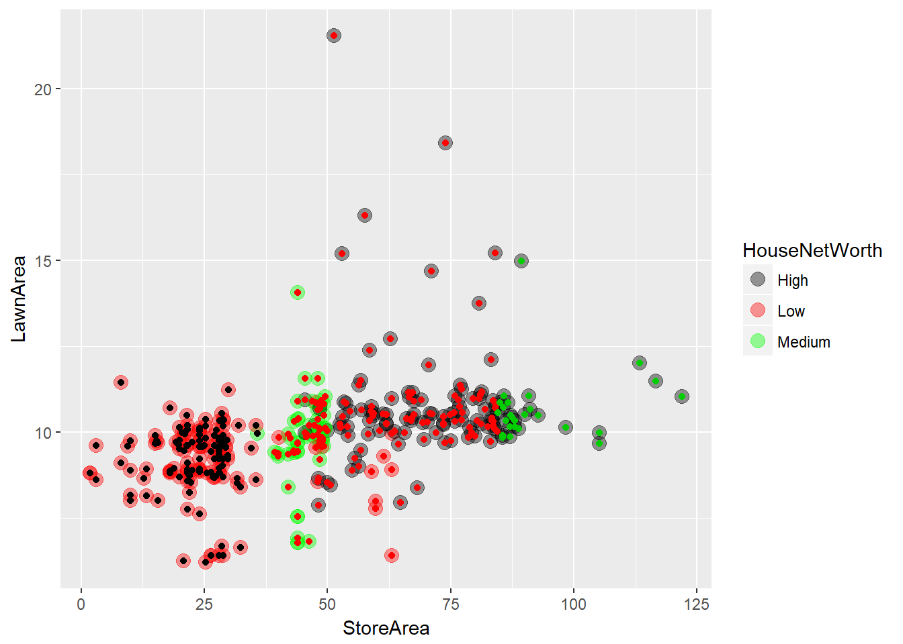
### Iris Example
iris_dist <- dist(scale(subset(iris, select = -Species)))
clustering <- hclust(iris_dist)
plot(clustering)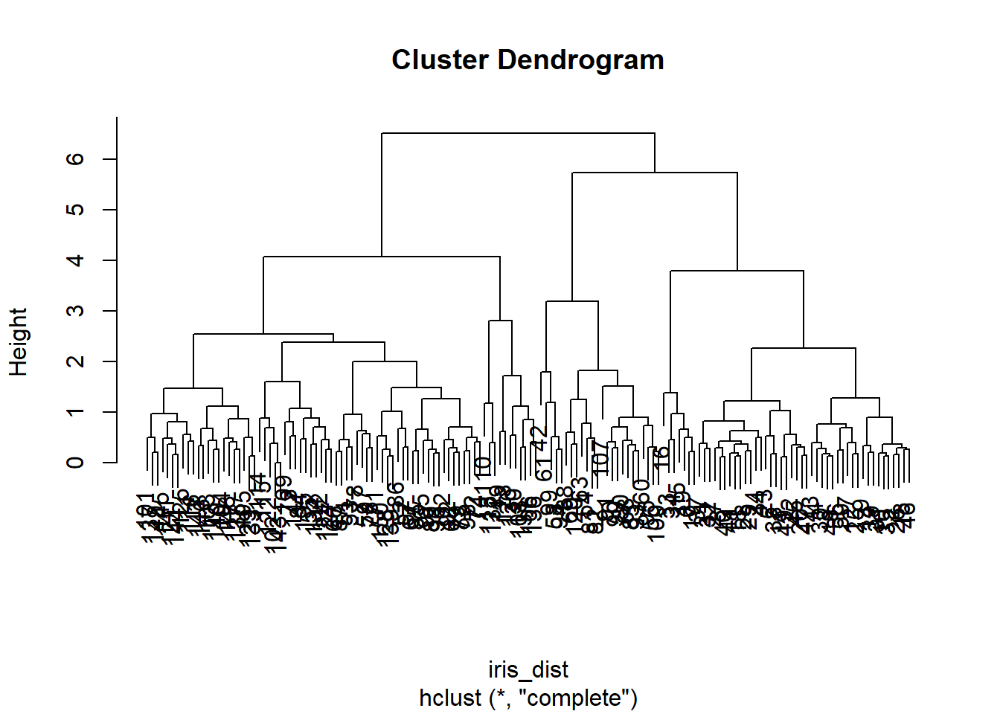
ggdendrogram(clustering) + theme_dendro()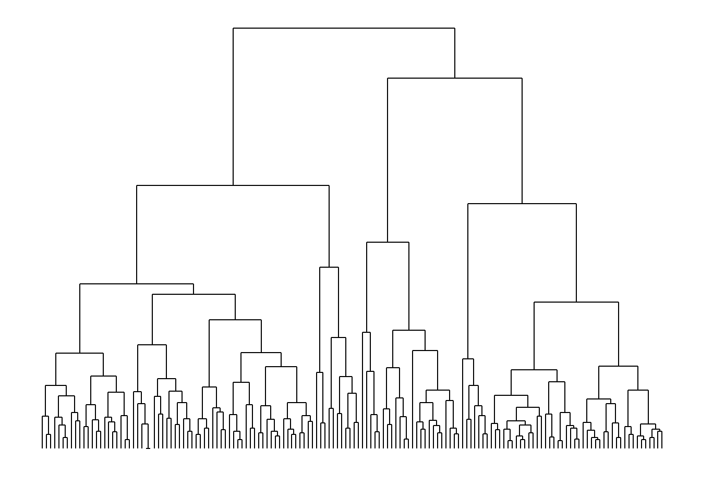
clusters = cutree(clustering,k = 3)
data = cbind(mapped_iris, Cluster = clusters)
ggplot() +
geom_point(data= data, aes(x = PC1, y = PC2,
shape = Species, colour = Cluster))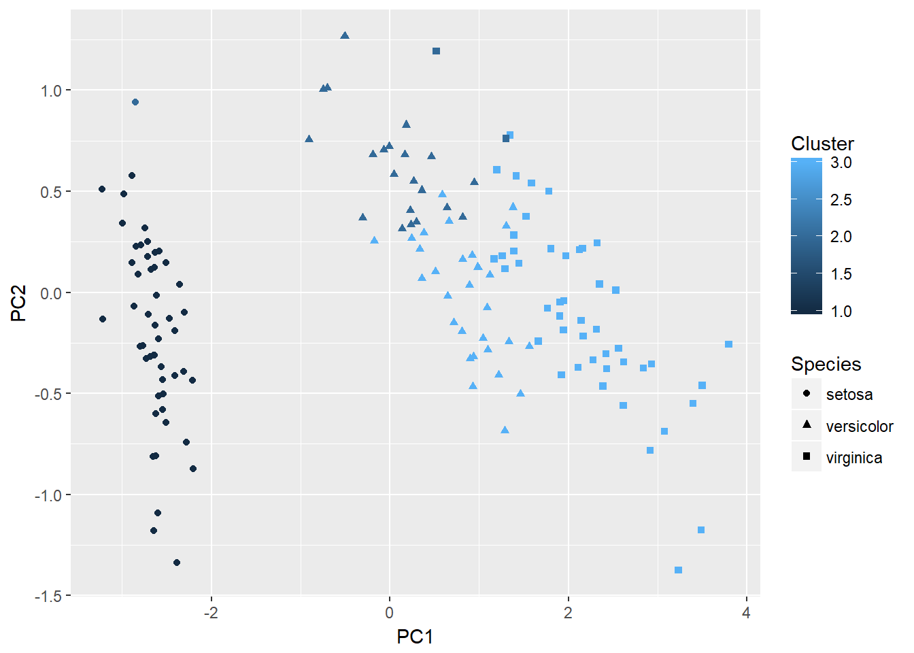
K-means clustering
K-means place observations into Kclusters by minimizing the wihtin-cluster sum of squares (WCSS). WCSS est la somme des distance entre chaque observation et le centre du cluster
Algorithm : - Assignment: Assign each observation to the cluster that gives the minimum within cluster sum of squares (WCSS). - Update: Update the centroid by taking the mean of all the observation in the cluster. - These two steps are iteratively executed until the assignments in any two consecutive iteration don’t change
To find the optimal value of k, we use and Elbow curve that show percentage of variance explained as a functionof nombrr of cluster
wss <-(nrow(Data_House_Worth)-1)*sum(apply(Data_House_Worth[,2:3],2,var))
for (i in 2:15) {
wss[i]<-sum(kmeans(Data_House_Worth[,2:3],centers=i)$withinss)
}
plot(1:15, wss, type="b", xlab="Number of Clusters",ylab="Within groups sum of squares")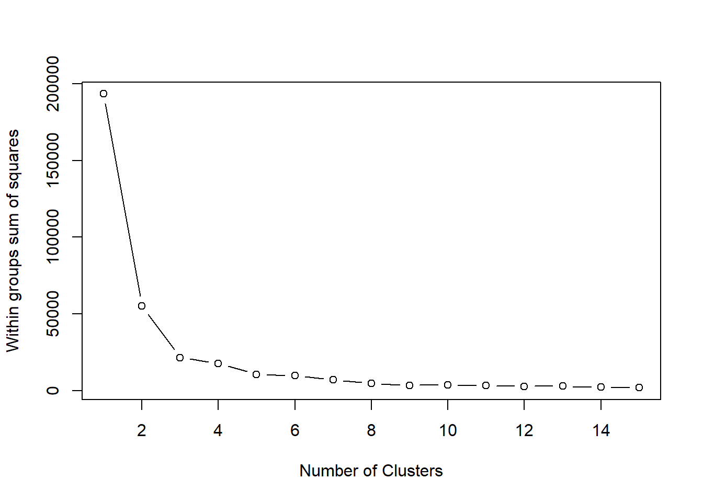
# 3 cluster explain most of the variance in data. 4cluster not more interest and not in concordance with intuition
# Model
Cluster_kmean <-kmeans(Data_House_Worth[,2:3], 3, nstart =20)
table(Cluster_kmean$cluster,Data_House_Worth$HouseNetWorth)##
## High Low Medium
## 1 0 122 1
## 2 84 0 0
## 3 46 13 50Cluster_kmean$cluster <-factor(Cluster_kmean$cluster)
ggplot(Data_House_Worth, aes(StoreArea, LawnArea, color = HouseNetWorth)) + geom_point(alpha =0.4, size =3.5) +geom_point(col = Cluster_kmean$cluster) +scale_color_manual(values =c('black', 'red', 'green'))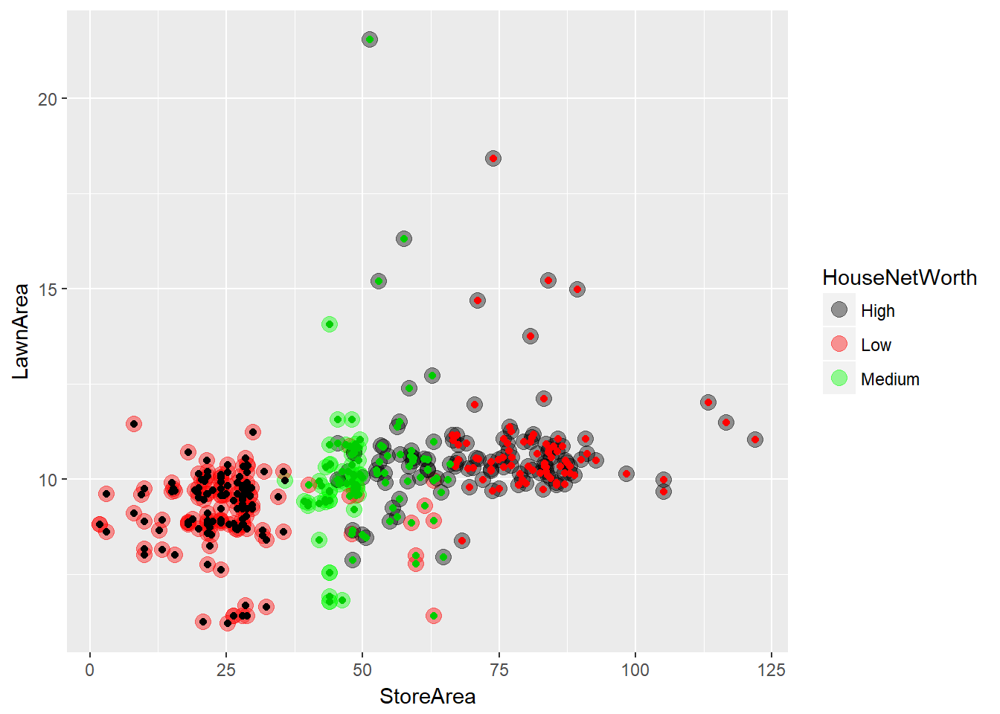
# Capture cluster very wellDitribution-based clustering
Distribution methods are iterative methods to fit a set of dataset into clusters by optimizing distributions of datasets in clusters (i.e. Gaussian distribution). - First randomly choose Gaussian parameters and fit it to set of data points. - Iteratively optimize the distribution parameters to fit as many points it can. - Once it converges to a local minima, you can assign data points closer to that distribution of that cluster
Attention cette méthode souffre d’overfitting
library(EMCluster, quietly =TRUE)## Warning: package 'EMCluster' was built under R version 3.3.3#model
ret <-init.EM(Data_House_Worth[,2:3], nclass =3)
ret## Method: em.EMRnd.EM
## n = 316, p = 2, nclass = 3, flag = 0, logL = -1871.0335.
## nc:
## [1] 100 48 168
## pi:
## [1] 0.2508 0.2000 0.5492# assign class
ret.new <-assign.class(Data_House_Worth[,2:3], ret, return.all =FALSE)
plotem(ret,Data_House_Worth[,2:3])
ggplot(Data_House_Worth, aes(StoreArea, LawnArea, color = HouseNetWorth)) +
geom_point(alpha =0.4, size =3.5) +geom_point(col = ret.new$class) +
scale_color_manual(values =c('black', 'red', 'green'))
# good fort high and low.Density based clustering DBSCAN
see more on Machine Learning Using R p 349
Evaluation of clustering
Internal evaluation
- Dunn Index : the ratio between the minimal intercluster distances to the maximal intracluster distance. But high score
- Silhouette Coefficient : the average distance to elements in the same cluster with the average distance to elements in other clusters. Objects with a high silhouette value are considered well clusteredexternal evaluation on test set
- Rand index : similar to classification rate in multi-class classification problems. measures how many items that are returned by the cluster and expert (labeled) are common and how many differ. $RI = \frac{TP+TN}{TP/FP/FN/TN}$ (true positive, true negative,...)
- Jaccard index : measures the overlap of external labels and labels generated by the cluster algorithms. The Jaccard index value varies between 0 and 1, 0 implying no overlap while 1 means identical datasets. $J= \frac{|A \cap B|}{|A \cup B|} = \frac{TP}{TP+FP+FN}Association Rule Mining Algorithms
Association rule learning is a method for discovering interesting relations between variables in large databases using some measures of interestingness.
Pratique courante sur les transactional (supermarket, library,…). Pour mettre produit ensemble pourune promo, planning, customer segmentation, …
Usefull measures : - Support : is the proportion of transactions in which an item set appears - Confidence : indicates the strength of a rule. is the conditional probability $conf(X=>Y) = - Lift : is a ratio between the observed support to the expected support. If = 1 then independent. $ Lift(X=>Y) =
=> more information in Beginning Data Science With R p 192 or Machine learning with R chap 6.10
Singular Value decomposition
K-Nearest Neighbot
Learning Vector Quantization
Self-Organizing MAP (SQM)
Partitioning around Medoids PAM
Dimensionality reduction algorithms
PCA
principal component regression
Partial least square regression
Multidimendional scaling MDS
Linear discriminant Analysis LDA
Mixture discriminant Analysis MDA
Quadratic discriminant analysis QDA
exemple avec Fuzzy C-Means Clustering
This is the fuzzy version of the known k-means clustering algorithm as well as an online variant (Unsupervised Fuzzy Competitive learning).
Observe that we are passing the value ucfl to the parameter method, which does an online update of model using Unsupervised Fuzzy Competitive Learning (UCFL)
On suppose que les donn?es ce mettent a jours et a chaque nouvelle observation le modle s’update
library(e1071)
Data_House_Worth <-read.csv("C:/Users/007/Desktop/Data science with R/R/Dataset/Chapter 6/House Worth Data.csv",header=TRUE)
str(Data_House_Worth)## 'data.frame': 316 obs. of 5 variables:
## $ HousePrice : int 138800 155000 152000 160000 226000 275000 215000 392000 325000 151000 ...
## $ StoreArea : num 29.9 44 46.2 46.2 48.7 56.4 47.1 56.7 84 49.2 ...
## $ BasementArea : int 75 504 493 510 445 1148 380 945 1572 506 ...
## $ LawnArea : num 11.22 9.69 10.19 6.82 10.92 ...
## $ HouseNetWorth: Factor w/ 3 levels "High","Low","Medium": 2 3 3 3 3 1 3 1 1 3 ...Data_House_Worth$BasementArea <-NULL
online_cmean <-cmeans(Data_House_Worth[,2:3],3,20,verbose=TRUE,
method="ufcl",m=2)## Iteration: 1, Error: 56.5662750268
## Iteration: 2, Error: 56.0651790159
## Iteration: 3, Error: 55.6463980317
## Iteration: 4, Error: 55.2950527730
## Iteration: 5, Error: 54.9992458983
## Iteration: 6, Error: 54.7494365653
## Iteration: 7, Error: 54.5379506488
## Iteration: 8, Error: 54.3585975488
## Iteration: 9, Error: 54.2063703262
## Iteration: 10, Error: 54.0772108347
## Iteration: 11, Error: 53.9678255467
## Iteration: 12, Error: 53.8755409742
## Iteration: 13, Error: 53.7981901077
## Iteration: 14, Error: 53.7340232617
## Iteration: 15, Error: 53.6816382407
## Iteration: 16, Error: 53.6399259298
## Iteration: 17, Error: 53.6080283353
## Iteration: 18, Error: 53.5853068302
## Iteration: 19, Error: 53.5713189354
## Iteration: 20, Error: 53.5658024371# print(online_cmean)
ggplot(Data_House_Worth, aes(StoreArea, LawnArea, color = HouseNetWorth)) +
geom_point(alpha =0.4, size =3.5) +geom_point(col = online_cmean$cluster) +
scale_color_manual(values =c('black', 'red', 'green'))